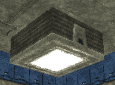
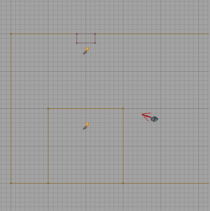

Creating DM-Quadroid/AddLights
Tutorial: DM-Quadroid for UT – Adding the Lights
In this part of the tutorial we are going to add some lights to our map. Without lights the only way you can see is if you add light at the map level. You can do that in the Level Properties, but the result is generally very bland. In this part of the tutorial you will cover the following
- Create a basic light shape and texture it.
- How to use the Duplicate tool (I'm a lazy mapper).
- Rebuild the geometry in the level.
Before you Start
Before you start please make sure you have completed the following steps:
- Looked at the Toolbox page so you are familiar with the icons on the left hand side of the editor.
- Completed the second part of this tutorial Creating DM-Quadroid/CreateTheCorridors.
- Opened the Unreal Editor and loaded the saved level.
A Quick Recap
At this stage of the tutorial we have created four rooms of equal size, textured them, and added corridors. We haven't added any lights or player start positions yet so the level is not only very dark, its also not playable.
Adding the lights
Step 1: Create and texture the light shape
- Make the red builder brush into a cube, 64 units in width and breadth, and 32 in height. This will be our light shape.
- Once you have created the light shape, add it to our world as a Semisolid. The easiest way to do this is to use the Add Special option in the brush menu and change the prefabs drop list to Semisolid Pillar. Once you've done that, you can press the OK button to add it to your level.
When you press the add button you will see a pinkish brush get added to your level.
- Now that you've added the light object you need to move it into position (level with the ceiling) and texture it. You may find the Decorating Rooms With Textures a handy reference at this point. We are going to place four lights in each room so make sure you leave room to evenly space them around the room.
- Once you have textured the light to your satisfaction we'll move it into position. I used RCLFTRM3 in the Trim texture group of UTtech2 for the sides of the light, and RCLFLIT1XY in the Light group of UTtech2 for the light itself. We also need to set the light texture to Special Lit.
The reason we set the light texture to "special lit" is to give us greater control over how the light looks. By setting the special lit property of the light we can control the light within the room, and the light that shines on the light texture itself independently. This is a good thing. You should have something like the picture below.

Step 2: Add the lights
We are now ready to add some lights - at long last. We have our light shape, we've got it nicely textured and it looks lovely sitting on our ceiling. If you've moved the light geometry object then rebuild the geometry before continuing.
- In the 3D view right click on the light texture and select the Add Light Here option.
You will see a little torch icon appear as if by magic. This is our light object.
- In one of the side views move the light you just added down so that it's around 196 units (1.5 big squares) below the ceiling. You can do this by clicking once on the torch (it should go green), holding down the Shift key and dragging (keep the left mouse button down) the torch shape downwards.
- Once you have move the light into position, add another light in the same way as the first, but don't move it.
From a side view you should now see your light, below that the second light you added, and below that the first light you added. There's a picture below.

- Select the highest light, and right click on it. Select the Light Properties option (it's at the top). A big scary window will pop up from nowhere. Open up the Lighting group and set the bSpecialLit value to true, and the LightRadius to 32.
This will cause this light to only affect surfaces within it's radius that have a surface flag of special lit.
- Now open the LightColor group and set the LightBrightness to 196. This is going to be the colour of the light texture.
You can now use the rebuild lighting tool to build the lights within the level. If you are lazy like I am, you can rebuild everything in the level all in one go using the build all tool.
Step 3: One light is not enough
OK, so we've built a light shape and lit it with two lights. That's not enough, we need lots of lights. In fact, we are going to create four lights per room.
- In either the side or front view select both lights and your light geometry object (or brush). You can do this by holding down the Control key and Left clicking each of the objects in turn.
The light objects (torches) should be green. The light brush should be pink (because it's a Semisolid).
- Now right click on any of the objects and select the Duplicate option.
You should see a new brush and two new lights appear - selected. Move the objects into an appropriate position within your room. When they are in position duplicate them again. Remember, we want 4 lights per room.
- Once you have your four lights positioned nicely rebuild everything using the build all toolbar icon. You may have noticed that the Duplicate option didn't affect the displayed geometry in the 3D view.
The first thing you will notice is that it's awfully bright in there. The floor looks completely washed out. In game, the level will look even brighter. We need to do something about that.
- Select all four of the lower lights you have created and set their brightness to 24 (hint: we changed the light brightness above).
That should look much better now. It may look a little dark. Don't worry, in game things appear slightly brighter than they do in the editor. If you find that the brightness of the light texture changes when you do this it means you haven't set the SpecialLit property of the texture. Do this now and then rebuild everything again.
- Now we have lit one room, duplicate your four lights (brush and two torches apiece) and add them to the other three rooms.
You should now have four beautifully lit rooms. Feel free to take a room and play around with the different lighting effects. But to be honest, it's best left till we've added some player starts. Which is the next tutorial.
That's It
Well done. You've managed to complete the third part of the tutorial. Hopefully you'll be looking at a four room map with corridors joining the rooms, complete with lights. Even though we have done all this we still haven't got a level that we can play around in. Don't worry though. We will get there. I'm not one for making things too easy, and running around in the square box is pretty dull anyway.
At this point it's worth saving the map. Use the File → Save to save the level over the top of your previous version. You can save it under a different name if you like. Remember the UnrealEd Goblin likes to crash the editor on the regular basis so save little and often if you are planning on doing a lot of work in the editor.
You are now ready to move on to Creating DM-Quadroid/PlayerStarts, and add some player starts to the map. And then .... you can play it! See you there.
You can also see Lighting Basics for more information.